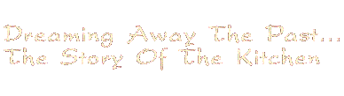
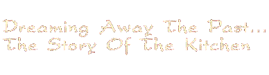
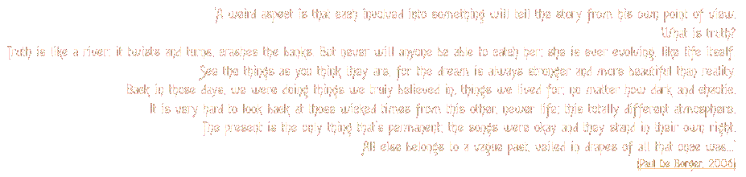
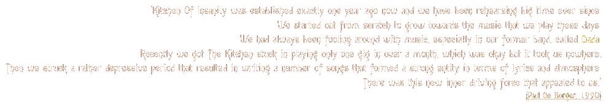
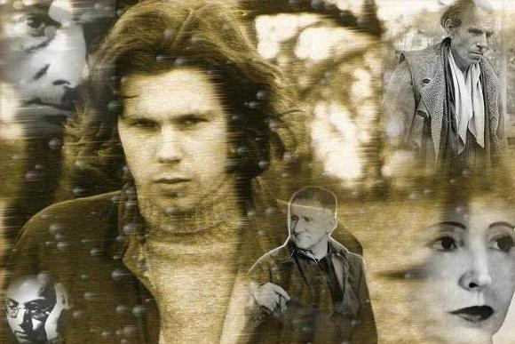
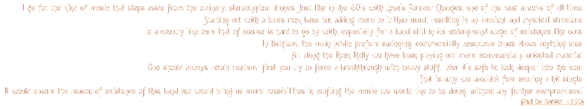

|
|
 |
|
|
 |
Sunday, April 1st, 1990. Kitchen of Insanity is one of
the ten acts that have reached the finale of Humo's Rock Rally, a major
concours for musical talent in Belgium. As the evening unfolds, the Antwerp based band
can be proud of their achievements: they hold court in second place, winning the
silver medal. The twists of history will make long-lasting popular acts out of the bands that finish as first
and third: Noordkaap and Gorky. The other seven and all others that went down
earlier in the competition have proven to be short lived projects; they all bit the dust more sooner than later. The same
twists of fate would do the same to the Kitchen in the long run.
But this band was due to make a difference, this band was something else, something greater and bigger than any of its
contemporaries. And before finally going down, they produced some of the finest music in Belgian history. Music beautifully
interwoven with the lyrics and poetry of Paul De Borger. Music
that could have made big money and, more importantly, make people look up and
listen to what they were gracing our world with. Their message was clear, the path rough and the toll high. This is the story of
a true Belgian legend, unknown to most, forgotten by many but still deeply loved by the rest.
In November of the year 2005, I was pointed into the direction of Paul De Borger and Frank De Cort after a chance meeting with Ludwig Vandenbruel, the band's one-time manager and founder of the Manifesto Records indie label. For many years I had been looking out for the Kitchen, hoping to find out something, anything about this group of people that had made these wonderful tunes. Looking back now, I must have been searching in the wrong places because, although not releasing any more music, the band did not shelve their mutual instruments after a final gig in September 1996. Later I tried the Internet every now and then, resulting only in two meager album reviews. But these days, I am the proud owner of a unique website and I bring to you this true story. Many thanks to the core members of the band for their endless support and input!

Paul and Frank had been together making music for a long time, joining the odd band, looking for a vehicle to bring their abilities to the ears of music lovers. By 1990, the early Kitchen of Insanity had proven to be a productive force for over a year before the Rock Rally put them in the spotlight. Together with Jan Hollants on keyboards, Michel Clarys on bass and Stefan Verstraeten behind the drum kit, the band formed a tight unit in which all elements came together and fell into place. The group of young men were ready to rumble.

All along the concours, the Kitchen are a favourite to many. One of their main assets is the enigmatic, yet powerful singing voice of
Paul De Borger; quoted 'a top vocalist' by the press. But people always feel an urge to label everything
they encounter, so it wasn't long before journalists armed themselves with the name of Jim Morrison.
Indeed, the resemblances between Paul's singing and that of the late Lizard King were at times staggering. A remark like this must
have been rather flattering to a young artist trying to make something good out of his passion for writing and performing.
The band never hid the fact that Morrison and The Doors were a main influence, at times
incorporating the odd cover into their shows. That distinctive Doors sound being clearly present not only over the
microphone, the overall feeling is pretty Doors-like, with a keyboard sound that immediately brought to mind
Ray Manzarek's cheesy organ playing style. More joint luggage between both bands are the Blues and
the cabaret-style music of Bertolt Brecht and Kurt Weill.
It is an easy tag for the public to use: The Doors were riding a massive wave of popularity in the early 1990's, selling more albums and merchandise twenty years after their demise than ever before. But those listening more carefully will notice that there's more. In interviews at the time, Paul revealed the names of Nick Drake, Nick Cave, John Cale and Jacques Brel as being some of the main musical influences. Lyrically, De Borger introduced his spectators to the writings and poetry of great French writers like Louis-Ferdinand Céline, Arthur Rimbaud, Anaïs Nin and Charles Baudelaire. This impressive cocktail of cultural greatness put the Kitchen well ahead of their rivals in the Rock Rally and makes them unique. But to many, these sources of inspiration are largely unknown and thus overlooked.




| background music: I'm In Trouble (Dreamaway Sunday) |